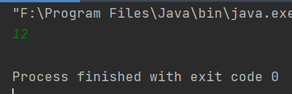
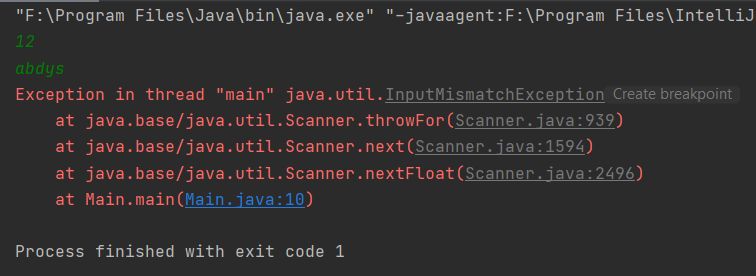
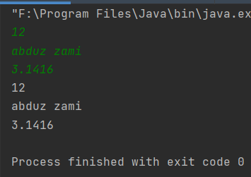

Scanner.nextLine() ব্যাবহারের সতর্কতা
Main.java
|
import java.util.Scanner; |

এভাবে যদি int ইনপুট নেওয়ার পর nextLine() দিয়ে String ইনপুট নিতে যাই তাহলে String এ null value assign হবে। কারন nextInt() এ আমরা enter প্রেস করেছিলাম। nextInt() int ছাড়া অন্য কিছু পেলে ব্রেক করে। তাই new line বা enter টি stream এ থেকে যায়। যা পরের nextLine() গ্রহন করে। এই new line এর আগে যেহেতু কোন কিছু নেই সেহেতু String টি তে null value assign হয়। এখন আবার যদি nextLine এর পরে nextInt বা অন্য কোন মেথড নেই nextLine বাদে তাহলে error পেতে পারি।
যেমন যদি নিচের কোডটি দেখি।
Main.java
|
import java.util.Scanner; |

এখানে exception দেখানোর কারন হল। 12 ইনপুট দেওয়ার সময় যে অতিরিক্ত new line বা enter stream এ রয়ে গিয়েছিল সেটি nextLine() কর্তৃক গৃহীত হয়েছে। যার কারনে ইউজার প্রদত্ত String abdys কে nextFloat() দিয়ে ইনপুট নেওয়া যাচ্ছে না। কারন abdys একটি String, float নয়।
এটা শুধু nextInt বা nextFloat এর জন্য প্রযোজ্য নয়। nextLine বাদে অন্য যেকোনো Scanner method এর জন্য প্রযোজ্য।
এর থেকে রক্ষা পাওয়ার উপায় দেখি আমরা।
খুব বেশি কিছু নয়। nextInt() nextFloat() next() এসবের পরে একটি nextLine() দিয়ে দিলেই অতিরিক্ত new line বা enter টি vanish হয়ে যাবে।
Main.java
|
import java.util.Scanner; |
এর output যদি দেখি।

আমরা নিচের কাজ টিও করতে পারতাম।
Main.java
|
import java.util.Scanner; |
Integer.parseInt এর কাজ হচ্ছে String কে int এ রুপান্তর করা। আর Integer.parseFloat এর কাজ হচ্ছে String কে float এ রুপান্তর করা।
Created with the Personal Edition of HelpNDoc: Create help files for the Qt Help Framework